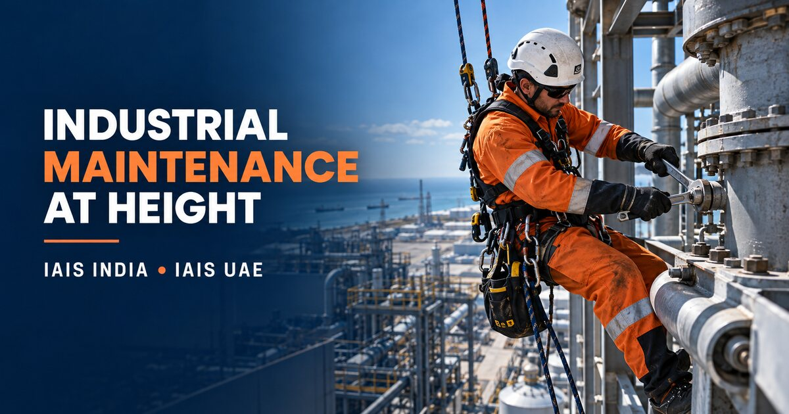
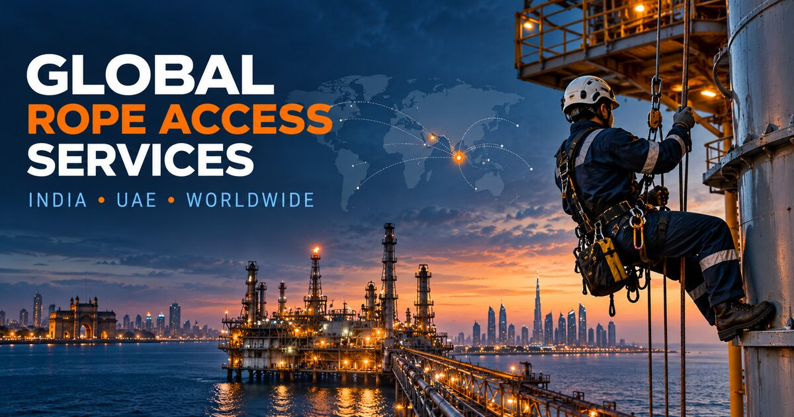

Mechanical Maintenance
Planned corrective and preventive work at elevated locations.
- Fastener and component replacement
- Pipe support and bracket maintenance
- Minor dismantling and reinstallation
- Adjustment and tightening activities
IAIS India and IAIS UAE provide rope-access-enabled mechanical, coating, cleaning, installation and repair support for elevated and restricted industrial assets—planned around operational safety and minimal disruption.
Request Maintenance Proposal →

Many maintenance tasks are technically straightforward but difficult to execute because the component is elevated, obstructed or outside conventional access.
Rope access can place trained personnel, tools and controlled materials directly at the workface while reducing the space, erection time and operational interference associated with scaffolding or heavy access equipment.
IAIS India develops each maintenance plan around the actual task, asset condition, tool and material requirements, isolation status, dropped-object risk and rescue arrangements.
Final feasibility, personnel competence, tools, consumables and quality documentation are confirmed in the project-specific proposal and method statement.
Planned corrective and preventive work at elevated locations.
Controlled movement of tools and components within the approved lifting plan.
Access support for approved repairs and small fabrication activities.
Removal of loose corrosion and degraded coatings before protection work.
Local and area coating work in difficult-to-access locations.
Cleaning support for high-level structures and surfaces.
Access assistance for approved installation and maintenance activities.
Maintenance support for tall buildings and civil structures.
Access for local insulation and weatherproofing maintenance.
Access, trade activity, tools, materials, permits and rescue arrangements are assessed together before personnel begin work.
Share your maintenance scopeReview the defect, required repair, quantities, acceptance standard and site constraints.
Define anchors, rope paths, work positioning, tool hauling, material staging and exclusion zones.
Confirm operational status, energy isolation, hot-work or chemical controls and required site permits.
Complete the task under approved method statements, supervision, rescue readiness and quality checks.
Record the work completed, materials used, observations, photographs and outstanding items.
Tool tethering, secondary retention, controlled hauling and defined exclusion zones.
Planned quantities, secure containers and controlled transfer to and from the workface.
Alignment with site isolation, hot-work, chemical, electrical and work-at-height requirements.
Task-appropriate rescue plan, competent team and available retrieval equipment.
Location-referenced photographs showing original condition and completed work.
Tasks completed, locations, quantities, materials and agreed inspection status.
Applicable coating, tightening, repair or inspection records required by the project plan.
Batch, component or consumable information when required by the client specification.
Conditions outside the approved work scope identified for client review.
Relevant rope access and trade qualification records required for the project.
Send photographs or drawings, scope quantities, materials, operational condition, schedule, site requirements and any client specification. We will develop the access and execution plan.